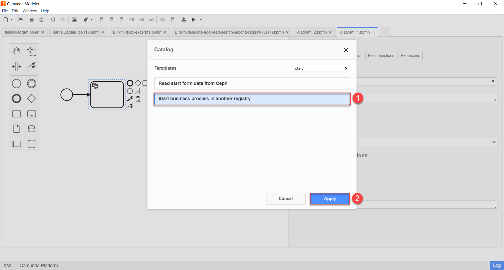
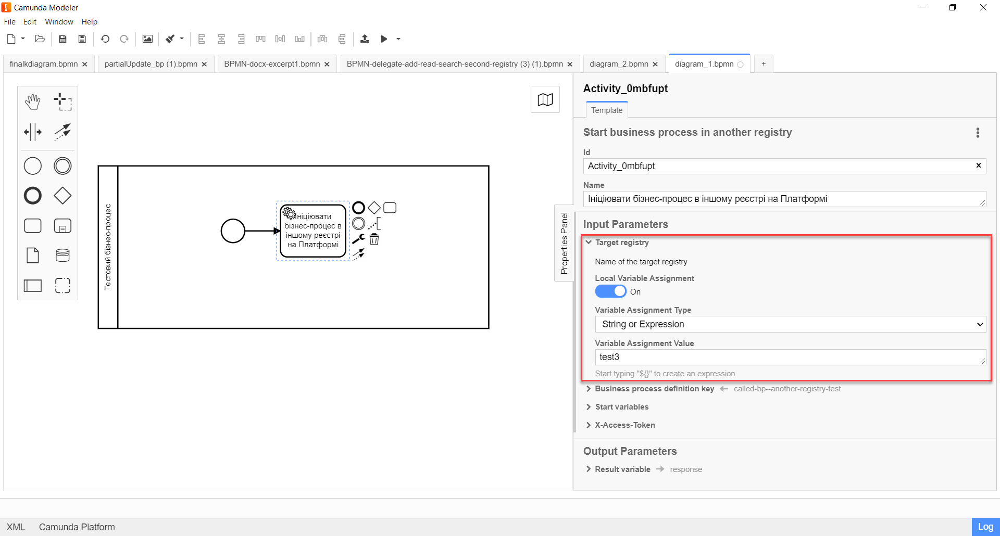
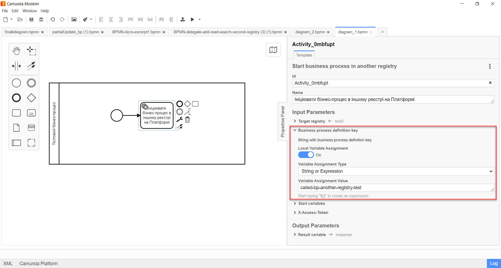
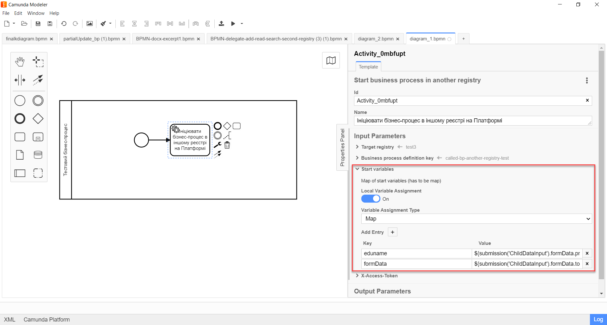
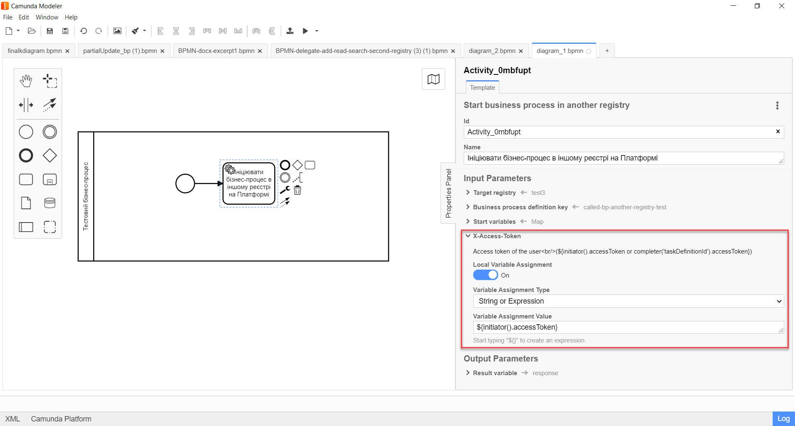
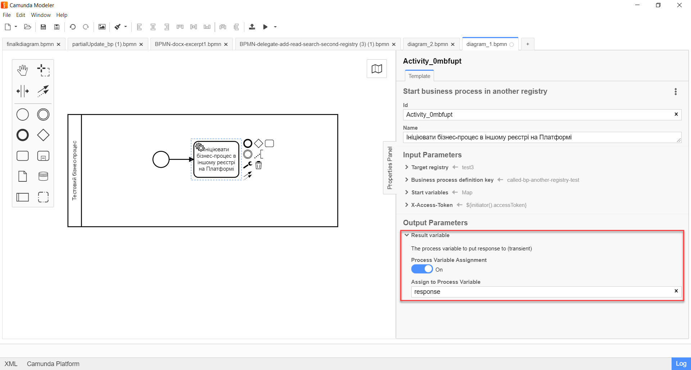

Start business process in another registry
The Start business process in another registry extension is a delegate for starting business processes in other registries on the Platform. This extension is configured using the template with the same name: Start business process in another registry (registryConnectorStartBpDelegate.json).
- To configure the delegate template in Camunda Modeler, perform these steps:
-
-
Open the business process modeling interface.
-
Create a Service Task.
-
In the settings panel on the right, click the
Open Catalogbutton and select the Start business process in another registry delegate template from the list. ClickApplyto confirm your action.
-
Configure the template:
Before configuring the template in Camunda Modeler, ensure the resources/element-templates folder of the application contains the registryConnectorStartBpDelegate.json file. -
In the Name field, specify the name of the task in which the delegate is configured. For example,
Initiate a business process in another registry on the Platform. -
Continue to the Input Parameters section.
-
Expand the Target registry section and enter the name of the target registry where the business process should be started.
The name of the registry must match the name specified for the registry (namespace) in the Control Plane admin console. -
Set Local Variable Assignment to
ON. This will create a local variable for the name of the registry where the business process should be started. -
From the Variable Assignment Type dropdown list, select String or Expression.
-
In the Variable Assignment Value field, specify the name of the registry where the business process should be started. For example,
test3.In our example, we specify the registry name directly:
test3.You can also use the
submission()function and specify the registry name from the UI form as${submission('<formId>').formData.prop('namespace').value()}, where'<formId>'should be replaced with the ID of the user task (form) in the business process, and'namespace'is an attribute for the environment (namespace) of the cluster where the registry is deployed.Example 1. Example of specifying the registry name through the submission() function${submission('childDataInput').formData.prop('namespace').value()}
-
-
Expand the Business process definition key section and specify the ID of the business process that should be started in the target registry.
The business process ID is unique within the regulations of a particular registry and corresponds to the process_definition_idparameter in the bp-auth directory or theprocess_definition_keyparameter in bpms.-
Set Local Variable Assignment to
ON. This will create a local variable for the ID of the business process that should be started. -
From the Variable Assignment Type dropdown list, select String or Expression.
In our example, it will be a String. -
In the Variable Assignment Value field, specify the ID of the business process that should be started. For example,
called-bp—another-registry-test.
-
-
Expand the Start variables section and specify the start variables for the business process that should be started in the target registry.
For the target process to start, it needs the appropriate startup parameters. These parameters must be passed as a set of start variables to start the business process.
-
Set Local Variable Assignment to
ON. This will create a local variable for initiating the process in another registry. -
From the Variable Assignment Type dropdown list, select Map.
In other words, we need to pass a set of "key-value" pairs. -
In the Variable Assignment Value field, specify the keys and their values for the start variables of the process that should be started.
Add two records by clicking
Add Entry:-
In the first Key row, enter
edunameand provide the parameter value in the Value field. For example,${submission('ChildDataInput').formData.prop('eduFullName').value()}. -
In the second Key row, enter
formDataand provide the parameter value in the Value field. For example,${submission('ChildDataInput').formData.toString()}.In our example, we are passing two parameters from the ChildDataInputform using thesubmission()function.
-
-
-
Expand the X-Access-Token section and specify the access token for the resource:
-
Set Local Variable Assignment to
ON. This will create a local variable for the access token. -
From the Variable Assignment Type dropdown list, select String or Expression.
-
In the Variable Assignment Value field, specify the access token. For example,
${initiator().accessToken}.The access token is taken either from the initiator (for example,
$initiator().accessToken}) or the executor of the last user task (for example,${completer('taskDefinitionId').accessToken}).
-
-
-
In the Output Parameters section:
-
Expand the Result variable section and specify the name of the process variable that should contain the result. By default, it is set to
response.
-
-
-
-
Set Local Variable Assignment to
ON. -
From the Variable Assignment Type dropdown list, select String or Expression.
-
In the Variable Assignment Value field, specify the name of the result variable (default value is
response).